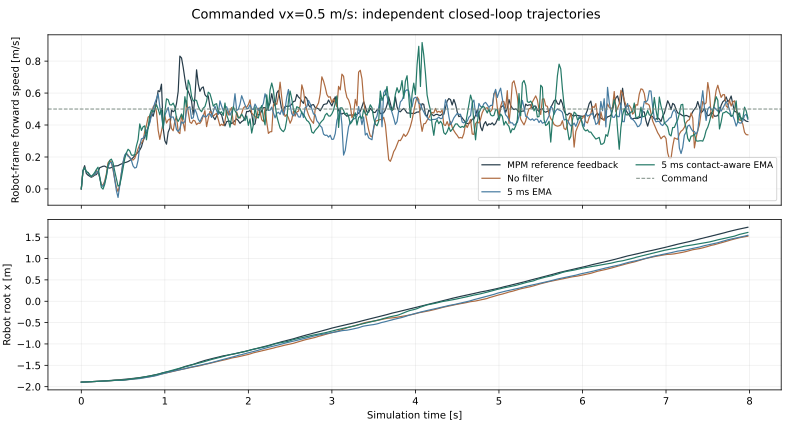
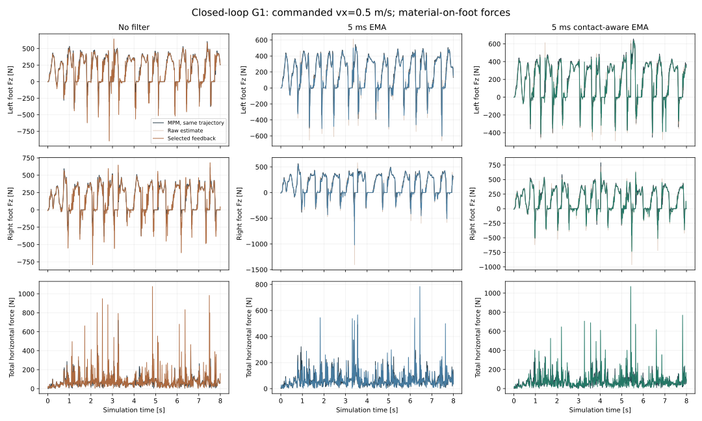
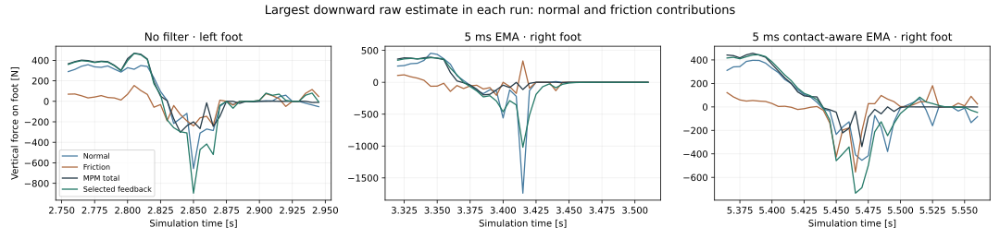
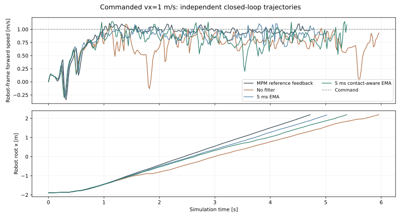
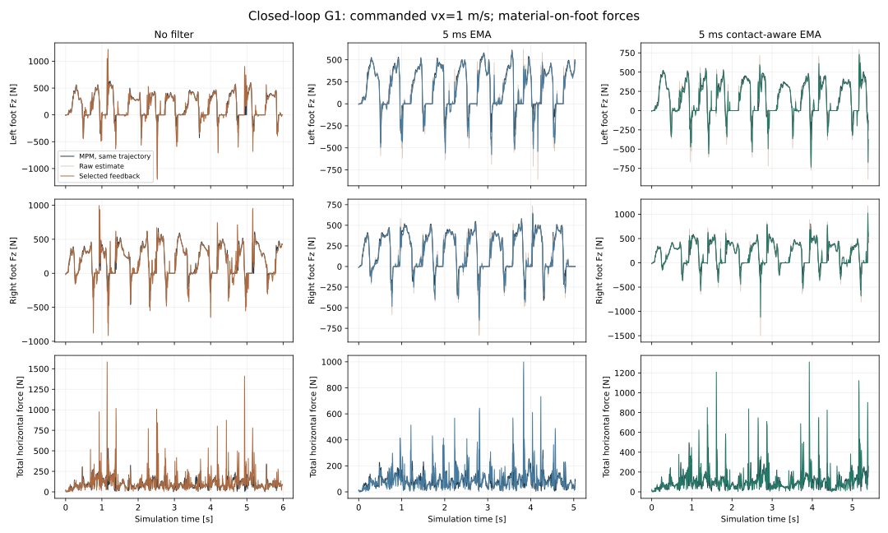
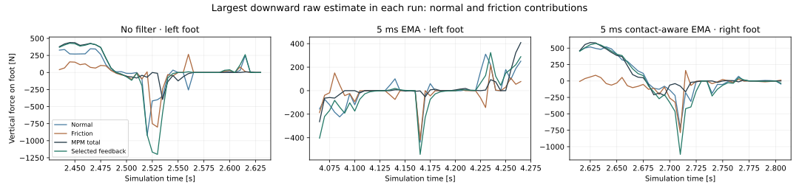

These are new closed-loop simulations. Filtered forces drive MJWarp, foot motion changes live MPM particles, and the resulting particle velocities drive the next force estimate. No recorded particle replay or GNN is used.
Compare no filter, a plain exponential moving average (EMA), and contact-aware EMA. Both filters use a 5 ms time constant with a 5 ms coupling step: approximately 63.2% current wrench plus 36.8% previous filtered wrench. The same filter applies to force and torque in world coordinates. Plain EMA adds approximately 2.9 ms of low-frequency delay beyond the common 5 ms coupling delay.
filtered_wrench[k] = 0.632 × raw_wrench[k] + 0.368 × filtered_wrench[k−1]
The wrench contains the material force on one foot and the material torque about that foot’s center of mass. Each foot has separate filter history, initialized to zero.
Contact-aware EMA passes the first active-contact wrench unchanged. It averages subsequent contact wrenches and clears history when all reconstructed normal impulses vanish. Contact activity uses summed positive normal impulse above 1e-8 N·s; it does not use MPM reference force labels. A changing set of particles within persistent foot contact does not count as a new contact.
Only the feedback wrench is filtered. The raw estimator, its contact solve, and MPM material update are unchanged. The coupler applies the selected wrench during the next step and uses that same wrench when preparing the next foot-proxy state. The filter adds no CPU work to the simulation feedback path; Warp kernels perform filtering and contact decomposition on GPU.
Each command uses the same reset seed, policy checkpoint, 5 × 2 × 0.3 m bed, 0.04 m MPM grid, 98,910 particles, native scene appearance, actuator settings, 25 maximum MPM solver iterations, 200 estimator iterations, and effective particle mass multiplier 100. Requested duration is 8 s or native termination. MPM reference-feedback trajectories are the previously recorded matched runs.
Plain 5 ms EMA improves force RMSE and forward-speed tracking in both tested commands. Contact-aware filtering increases support-onset impulse error in both tested commands. Large downward spikes remain with both filters. These single-seed trials justify further evaluation, not a general robustness claim.
| Command vx [m/s] | Feedback | Duration [s] | Mean vx [m/s] | Speed tracking RMSE [m/s] | Force-vector RMSE [N] | 50 ms onset impulse error [N·s] |
|---|---|---|---|---|---|---|
| 0.5 | MPM reference feedback | 8.00 8 s completed | 0.462 | 0.122 | — | — |
| 0.5 | No filter | 8.00 8 s completed | 0.432 | 0.150 | 95.6 | 3.53 |
| 0.5 | 5 ms EMA | 8.00 8 s completed | 0.434 | 0.137 | 69.1 | 2.74 |
| 0.5 | 5 ms contact-aware EMA | 8.00 8 s completed | 0.442 | 0.146 | 85.1 | 4.48 |
| 1 | MPM reference feedback | 4.74 outside_workspace | 0.879 | 0.295 | — | — |
| 1 | No filter | 5.98 outside_workspace | 0.697 | 0.388 | 144.3 | 4.37 |
| 1 | 5 ms EMA | 5.04 outside_workspace | 0.824 | 0.297 | 96.9 | 3.77 |
| 1 | 5 ms contact-aware EMA | 5.40 outside_workspace | 0.774 | 0.333 | 134.5 | 5.15 |
Force error compares the selected wrench with same-step MPM force on that run’s own trajectory, before the common one-step application delay. Force RMSE averages per-foot vector error over both feet during steps where either MPM foot-force norm exceeds 20 N. Speed uses robot-frame root-COM velocity, sampled before each policy update and held across four coupling steps, over the same material-active intervals. Onset impulse integrates force over 50 ms after reference upward force exceeds 20 N following at least 20 ms below that threshold; these are evaluation-only force events, not verified geometric touchdowns. The events and trajectories can differ across filters.
Four native-view recordings, synchronized over 0–8 s. Only display resizing and labels outside each image are added; scene lighting, particle appearance and cameras are unchanged.

Curves stop at each run’s native termination. Earlier boundary arrival can reflect faster walking, not worse stability.

MPM and estimated forces are compared within each run’s own trajectory. The selected wrench enters MJWarp one coupling interval later.

| Mode | Time [s] | Raw Fz [N] | Normal Fz [N] | Friction Fz [N] | MPM Fz [N] | Foot vz [m/s] |
|---|---|---|---|---|---|---|
| No filter | 2.850 | -896 | -656 | -240 | -200 | 2.84 |
| 5 ms EMA | 3.415 | -1405 | -1740 | 335 | -114 | 2.18 |
| 5 ms contact-aware EMA | 5.465 | -964 | -409 | -555 | -37 | 2.71 |
Upward is positive. Normal and friction are decomposed from the estimator’s individual contact impulses. These components explain the recorded force direction; they do not establish why the estimated magnitude differs from MPM.
Four native-view recordings, synchronized over 0–4.72 s. Only display resizing and labels outside each image are added; scene lighting, particle appearance and cameras are unchanged.

Curves stop at each run’s native termination. Earlier boundary arrival can reflect faster walking, not worse stability.

MPM and estimated forces are compared within each run’s own trajectory. The selected wrench enters MJWarp one coupling interval later.

| Mode | Time [s] | Raw Fz [N] | Normal Fz [N] | Friction Fz [N] | MPM Fz [N] | Foot vz [m/s] |
|---|---|---|---|---|---|---|
| No filter | 2.530 | -1200 | -399 | -801 | -12 | 2.12 |
| 5 ms EMA | 4.165 | -857 | -438 | -419 | -2 | 1.38 |
| 5 ms contact-aware EMA | 2.710 | -1497 | -711 | -786 | -78 | 5.40 |
Upward is positive. Normal and friction are decomposed from the estimator’s individual contact impulses. These components explain the recorded force direction; they do not establish why the estimated magnitude differs from MPM.
At 0.5 m/s, plain EMA retains 19.7 N RMS force when the reconstructed contacts are inactive; contact-aware EMA gives zero. At 1 m/s, plain EMA retains 19.6 N RMS force when the reconstructed contacts are inactive; contact-aware EMA gives zero.
Lower force RMSE alone is not evidence of improved control. Compare forward-speed tracking, impulse error, native termination, and the normal/friction decomposition together. An 8 s completion or a workspace exit does not establish general robustness. GPU numerical differences can amplify during rollouts; matched resets do not guarantee bitwise-identical trajectories across repeated runs. Results cover two forward commands, one seed and one material; backward walking, turning, and additional materials remain untested with filtering.
A temporal average can retain a biased impulse and lag a legitimate contact change. The contact-aware rule prevents a filtered force tail after reconstructed contact loss, but it does not enforce the current contact constraints on the averaged wrench. The estimator still uses independent virtual feet and an exploratory effective material mass. Neither filtering method is a calibrated material law.